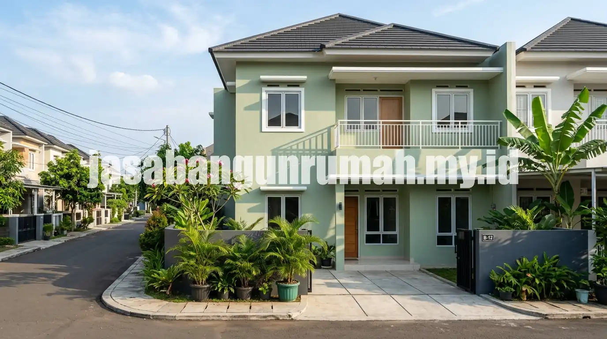

Daftar Isi
Jasa renovasi rumah Bekasi melayani perbaikan atap bocor, dinding retak, hingga cat ulang secara menyeluruh, dengan tim yang dapat datang langsung ke lokasi untuk survey sebelum pekerjaan dimulai.
Apa Saja Layanan Renovasi Rumah yang Dilayani di Bekasi?
Layanan mencakup perbaikan atap bocor dengan penggantian genteng atau rangka yang sudah lapuk, perbaikan dinding retak baik ringan maupun struktural, serta pengecatan ulang eksterior dan interior rumah menggunakan cat berkualitas tahan cuaca.
Selain tiga layanan utama tersebut, tim juga menangani perbaikan kecil lainnya seperti perbaikan talang air, pembaruan waterproofing pada dak beton, dan penggantian keramik yang retak atau pecah. Cakupan layanan ini dirancang untuk memenuhi kebutuhan renovasi ringan hingga menengah tanpa harus melibatkan proses renovasi total yang memakan waktu lebih lama.
Bagaimana Proses Pengerjaan Renovasi Atap, Dinding, dan Cat Ulang?
Proses dimulai dari survey lokasi untuk menilai tingkat kerusakan, dilanjutkan dengan penyusunan estimasi biaya sesuai jenis pekerjaan, kemudian pelaksanaan di lapangan oleh tim tukang berpengalaman, dan diakhiri dengan pemeriksaan hasil sebelum serah terima kepada pemilik rumah.
Pada pekerjaan atap, survey biasanya mencakup pengecekan kondisi rangka, genteng, dan talang air untuk memastikan sumber kebocoran teridentifikasi dengan tepat sebelum perbaikan dilakukan. Pada pekerjaan dinding retak, tim akan menilai apakah retakan tergolong ringan yang cukup ditambal ulang atau retakan struktural yang membutuhkan penanganan lebih mendalam. Sementara untuk cat ulang, proses mencakup pembersihan permukaan lama, pendempulan bagian yang rusak, hingga pengaplikasian cat dasar dan cat akhir sesuai warna pilihan pemilik rumah.

Berapa Kisaran Biaya Renovasi Atap dan Cat Ulang di Bekasi?
Biaya renovasi atap umumnya dihitung berdasarkan luas area yang diperbaiki dan jenis material pengganti yang dipilih, sedangkan biaya cat ulang dihitung berdasarkan luas permukaan dinding dan jenis cat yang digunakan.
Kisaran biaya pasti sebaiknya diperoleh melalui survey langsung, karena kondisi setiap rumah berbeda, misalnya tingkat kerusakan rangka atap yang bervariasi atau kondisi permukaan dinding yang memengaruhi jumlah lapisan cat yang dibutuhkan. Untuk mendapatkan estimasi biaya yang lebih akurat sesuai kondisi rumah, pemilik dapat mengajukan permintaan survey terlebih dahulu sebelum menyepakati rencana kerja.
Apakah Tersedia Layanan Survey Lokasi Cepat untuk Kasus Mendesak?
Untuk kasus mendesak seperti atap bocor saat musim hujan, tim dapat dijadwalkan untuk kunjungan survey dalam waktu singkat setelah permintaan diajukan, guna mencegah kerusakan lebih lanjut pada plafon atau instalasi listrik di dalam rumah.
Wilayah layanan mencakup Bekasi Kota, Bekasi Utara, Bekasi Timur, Bekasi Selatan, Bekasi Barat, dan sekitarnya, dengan tim lapangan yang siap datang langsung ke lokasi setelah jadwal disepakati. Bagi warga Bekasi yang membutuhkan perbaikan rumah segera, dapat hubungi jasa renovasi rumah bekasi profesional untuk mengajukan survey lokasi tanpa biaya dan mendapatkan estimasi pengerjaan sesuai kebutuhan.